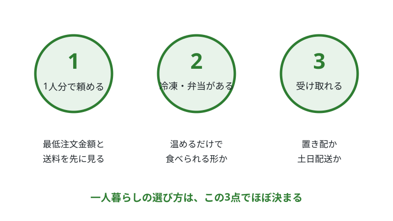
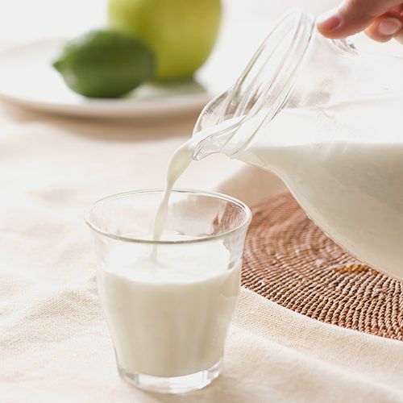

自炊が続かない一人暮らしへ｜理由は「買い物・献立・片付け」の3つの負担です


「自炊しなきゃとは思うけれど、3日で終わってしまう」。その原因は、料理の腕ではなく、料理の前後にある負担の重なりです。負担を3つに分けて見れば、減らし方が見えてきます。
自炊が続かない理由は、買い物・献立・片付けの3つの負担です。全部を頑張る必要はなく、重い負担から1つずつ仕組みに置き換えるのが続きやすい順番です。置き換え先の候補として、献立と食材がセットで届くミールキットや、初回だけ試せるおためしセットがあります。
Oisixのおためしセット（1,980円）を公式で見る早見表｜6つの仕組みと、減らせる負担
| 仕組み | 減らせる負担 | 内容 |
|---|---|---|
| 1. 買い物の回数を決める | 買い物 | 週に何回行くかを先に決め、まとめ買いと宅配を使い分ける |
| 2. 買うものを型で決める | 買い物 | 常備する食材の顔ぶれを固定し、店で迷う時間をなくす |
| 3. 献立の一部を任せる | 献立 | ミールキットや決まった献立の仕組みに、週の何日かを任せる |
| 4. 手順の短い料理から始める | 調理 | 使う道具と工程が少ない料理を平日の定番にする |
| 5. 作る量と食器を先に決める | 片付け | 1回分の量と使う食器の数を決めてから作り始める |
| 6. 小さく試せる形から始める | 始める負担 | 大きな契約やまとめ買いの前に、おためしで合うか確かめる |
| 価格・条件の確認先：Oisix公式でおためしセットを見る | ||
なぜ続かないのか｜料理そのものより前後が重い

仕事から帰って、買い物に寄って、献立を考えて、作って、食べて、洗う。一人暮らしの自炊は、この一連の流れを全部ひとりで回す作業です。続かなくなるのは、調理の場面だけが原因ではありません。買い物の時間、献立を考える負担、作った後の片付け。この3つが重なると、「今日はもういいか」となりやすくなります。
逆に言えば、3つのうち1つでも軽くなれば、自炊の回数は戻しやすくなります。次の節から、負担ごとの減らし方を並べます。
買い物の負担を減らす｜回数と買うものを先に決める
仕組み1：買い物の回数を決める。「必要なときに寄る」をやめて、週に何回・何曜日に行くかを決めるだけで、寄り道の判断が消えます。重いものやかさばるものは宅配に寄せ、店では生鮮だけ買う、という分け方も有効です。
仕組み2：買うものを型で決める。常備食材（卵・豆腐・冷凍の肉や魚・乾物など）の顔ぶれを固定すると、店で「何を買うか」を考える時間がほぼなくなります。型から外れる買い物は週末だけ、と決めるのも手です。
判定：買い物は「回数」と「型」の2つを決めるだけで、負担の感じ方が大きく変わります。食材宅配を使う場合も、全部を宅配にせず、足りない分だけを補う形が割高になりにくい頼み方です。
献立の負担を減らす｜週の何日かは「決まっている献立」に任せる
仕組み3：献立の一部を任せる。毎日ゼロから献立を考えるのが重いなら、週の2〜3日だけ、献立と食材がセットになったミールキットに任せる方法があります。残りの日は型で決めた常備食材で回せば、考える回数そのものが減ります。
Kit Oisixは2人前が基本で、売れ筋は2人前 1,700〜2,100円です。
1,700円 ÷ 2人 ＝ 850円／2,100円 ÷ 2人 ＝ 1,050円
→ 1人あたり 850〜1,050円。スーパーで揃えるより割高な部類なので、「考える負担を買う日」を週の何日かに絞るのが現実的な使い方です（単価の詳しい比べ方は「単価くらべ」）。

調理と片付けの負担を減らす｜手順と量を先に決める
仕組み4：手順の短い料理から始める。平日は、使う道具が少なく工程が短い料理を定番にします。凝った料理は休日の楽しみに回すと、平日の負担が下がります。道具の選び方で調理の手間も変わります（「フライパンの選び方」）。
仕組み5：作る量と食器を先に決める。片付けが重いのは、作りすぎと食器の多さが原因のことがほとんどです。1回分の量と、使う食器の数を決めてから作り始めると、洗い物は読める範囲に収まります。

パンを焼く習慣があると、朝食の献立を考える負担が減る、という声もあります。ホームベーカリーは買う前にレンタルで試す方法も、別の記事にまとめました。
小さく試せる形から始める｜Oisixおためしセットの条件
仕組み6：いきなり大きな形で始めない。定期便の契約や大量のまとめ買いから入ると、合わなかったときの負担が大きくなります。まずは1回だけ試せる形で、量と味と続けやすさを確かめるのが順番です。

Oisixのおためしセットは、初めての世帯限定・1世帯1回限りで、Kit Oisix（ミールキット）3品と野菜・果物・日配品のセットが1,980円（税込）・送料無料で試せます。買っても定期購入が自動で始まることはなく、満足できなければ全額返金保証（条件あり）も付いています。条件の詳しい確認は「Oisix詳説」にまとめています。
Oisix公式でおためしセットを見るセット内容は時期により変わります。最新の内容と条件は公式ページで確認してください。
よくある質問
- Q. 自炊が三日坊主になります。何から変えるべきですか？
- 買い物・献立・片付けのうち、いちばん重く感じる負担から1つだけ仕組みに置き換えてください。全部を一度に変えようとすると、それ自体が負担になります。
- Q. ミールキットは割高ではありませんか？
- 単価だけ見ると割高な部類です（Kit Oisixで1人あたり850〜1,050円）。献立を考える時間と買い物の手間を買うものとして、週の何日かだけ使う形が現実的です。
- Q. おためしセットを買うと定期購入が始まりますか？
- Oisixのおためしセットは1回限りのお届けで、買っただけでは定期購入は始まりません。続ける場合は、自分で入会手続きをした場合だけです。
判定のまとめ：自炊は気合いの問題ではなく、負担の配分の問題です。買い物・献立・片付けを分けて、重いものから仕組みに置き換えてください。
出典：Oisix公式サイト（おためしセットLP・FAQ、確認日：2026年11月26日）。価格は確認時点のもので、変動します。
※このページにはアフィリエイト広告が含まれます（A8.net）。申し込みボタンがあるのは提携済みのOisixのみで、他の会社へのリンクは公式サイトへの通常リンクです。